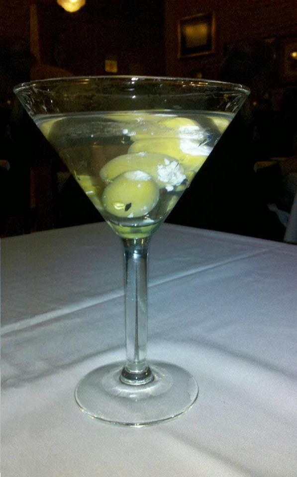

A Perfect Martini!
A hint of dry vermouth, two shots of gin and stirred — never, ever shaken.
Garnished with a blue cheese olive, a pickled onion, or a twist of lemon.
A drink of refinement and class.
